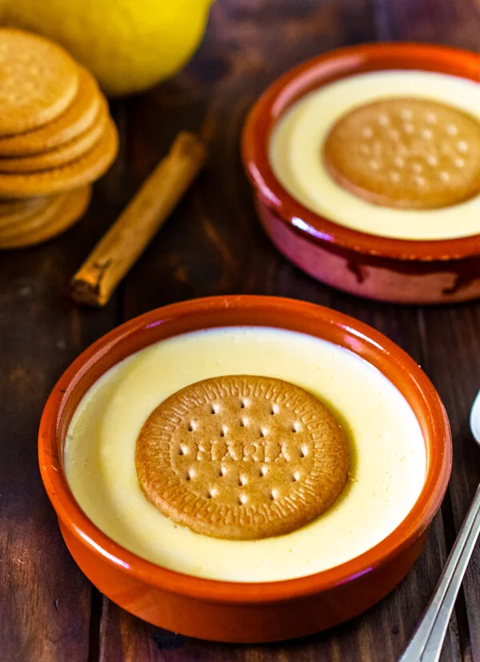

Volver al MENU
NATILLAS CASERAS

Ingredientes
Paso a Paso
Resultado Final
Ingredientes
- 750ml de leche entera
- 3 yemas de huevos grandes medida L
- 80g de azucar
- 20g de maicena
- 1 trozo de piel de limon
- 1 cucharada de aroma de vainilla
- 4galletas; da igual la marca de la galleta
Paso a Paso
- Lo primero es infusionar la leche para que tome el sabor de la piel del limón y de la vainilla (si la usamos en vaina). Echa en una olla mediana la leche y un trozo de piel de limón (como un dedo de largo es suficiente). Pon a fuego medio y deja que se vaya calentando. Cuando parezca que vaya a hervir aparta el cazo del fuego y deja que se infusione la leche durante 20 minutos.
- Pasado este tiempo pon en un cuenco grande las yemas de huevo, el azúcar, la maicena y el aroma de vainilla. Mezcla bien con unas varillas y asegúrate de que no quedan grumos.
- Retira la cáscara de leche y ve echándola poco a poco sobre el cuenco con los huevos mientras bates con las varillas. Como la leche ha estado al menos 20 minutos infusionándose estará templada o a temperatura ambiente por lo que no correremos riesgo de que se cuaje el huevo en esta fase. Si no has infusionado la leche, o no las has dejado que se enfríe lo suficiente, entonces debes añadirla muy poco a poco mientras bates para impedir que cuaje la yema.

- Cuando esté todo bien mezclado echa la mezcla huevos, azúcar, maicena y leche en la olla donde infusionamos la leche. Pon la olla a fuego medio-bajo.
- Ahora tienes que remover constantemente las natillas para que cuajen uniformemente. Si no lo haces así se formarán grumos en la base de la olla y las natillas no espesarán bien. Debes tener paciencia, el proceso tarda unos 15 minutos y debes remover durante todo el tiempo. Si notas que espesa demasiado rápido por abajo baja el fuego.
- Cuando lleves un rato notarás que la mezcla empieza a espesar. Si has usado las varillas para remover las natillas habrás notado que se forman muchas burbujas. Cuando las natillas tengan la consistencia adecuada notarás que las burbujas empiezan a desaparecer y es el momento de apartar del fuego.
- Queda repartir las natillas en cuatro recipientes y si te gusta añade una galleta María encima del todo. Deja que se enfríen a temperatura ambiente y luego tápalas y mételas en la nevera. De un día para otro están de vicio pero si no puedes esperar en 3-4 horas ya habrán tomado frío suficiente. Solo te queda decidir si quieres ponerle un poco de canela en polvo en tus natillas caseras.
Resultado Final
Volver al indice